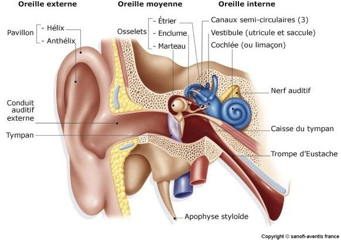

L'oreille

Definition
L'oreille est un organe pair et symetrique occupant des cavites creusees dans le rocher et qui assure deux fonctions differentes : l'audition et l'equilibration.
L'oreille externe comprend 2 parties :
- Le pavillon : forme par un cartilage enroule sur lui-meme en cornet et recouvert de peau sur ses deux faces recueille les ondes sonores et les dirige vers le conduit auditif externe.
- Le conduit auditif externe : long canal s'ouvrant au niveau de la conque en dehors, et dont le fond est ferme par le tympan. Les parois sont cartilagineuses sont pourvu de cils qui retiennent les poussieres. Dans sa paroi on trouve les glandes cerumineuses
L'oreille moyenne est situe dans l'epaisseur du rocher et comprend 3 parties :
- La caisse du tympan : cavite creusee dans l'os temporal remplie d'air. Sa paroi, le tympan est une membrane elastique qui se tend comme une peau de tambour. La caisse du tympan contient 3 petits os, les osselets (le marteau, l'enclume, l'etrier) relies par des articulations et reunissent le tympan a l’oreille interne.
- Les cavites mastoediennes : cavites aeriennes creusees dans l'epaisseur de la portion mastoedienne du temporal.
- La trompe d'Eustache : long canal allant du tympan au rhino-pharynx.
L'oreille interne comprend 2 elements :
- Le labyrinthe membraneux : compose par le vestibule (rele dans l'equilibration) forme de l'utricule et le saccule et le limaeon ou cochlee (rele dans l'audition).
- Le labyrinthe osseux : cavites oe logent le labyrinthe membraneux.